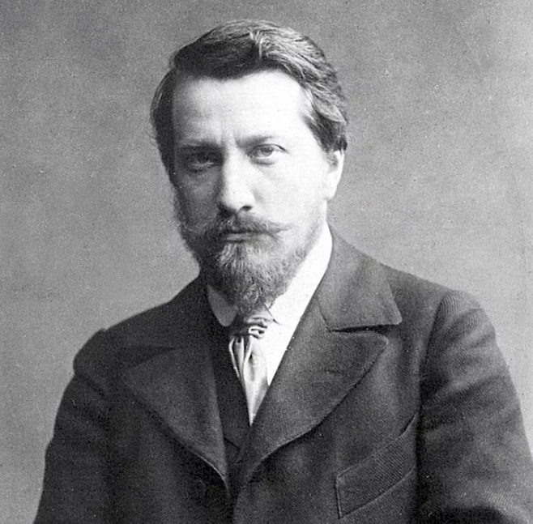

|  |
Серов В.А. 1965-1911– Серов Валентин – русский живописец и график, мастер портрета, академик Императорской Академии художеств. Валентин Александрович Серов родился в 1865 году в Санкт-Петербурге, в семье композиторов Александра Николаевича Серова и Валентины Семёновны Серовой (урождённой Бергман). Его прадедом (со стороны отца) был естествоиспытатель Карл Иванович Габлиц. Летом 1869 года Валентин Серов впервые выехал с родителями за границу. |